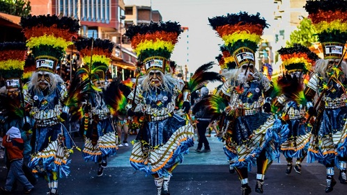
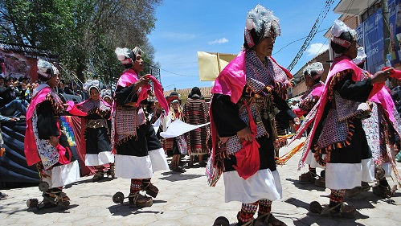
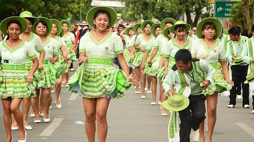
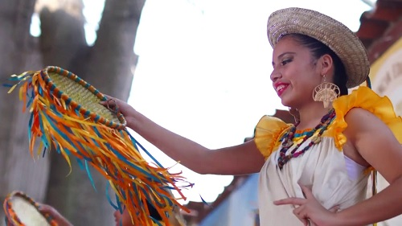

Oruro
TOBAS
La Danza De Los Tobas es una danza folclórica boliviana creada en la ciudad de Oruro
a inicios del siglo XX. Actualmente es bailada en importantes festivales como el
Carnaval de Oruro y la Fiesta del Gran Poder. Su origen es urbano y guarda poca
relación con el pueblo toba, más allá del nombre.
Leer más...

Chuquisaca
PUJLLAY
El Pujllay es una danza ritual boliviana de la cultura Yampara originaria de la región de Tarabuco,
ubicada en el departamento de Chuquisaca.
Leer más...

Cochabamba
SALAY
El Salay es una danza folclórica boliviana que nació en Jaihuayco una zona
popular de Cochabamba Cercado, esta danza inspirada en el zapateo de los
valles bolivianos, como el huaiño y la cueca, dio origen a la danza del
zapateo.
Leer mas...

Santa Cruz
TAQUIRARI
El taquirari es un ritmo musical y una danza originario de la etnia moxeña,
quienes actualmente viven en el noreste de Bolivia. Es característico de las
tierras bajas del país, en parte de los departamentos del Beni, Santa Cruz y
Pando.
Leer mas...